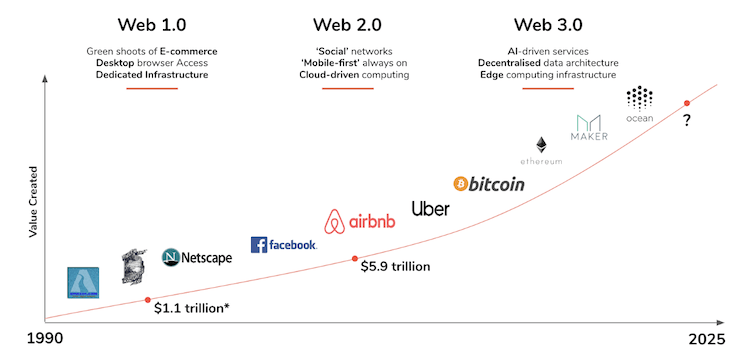
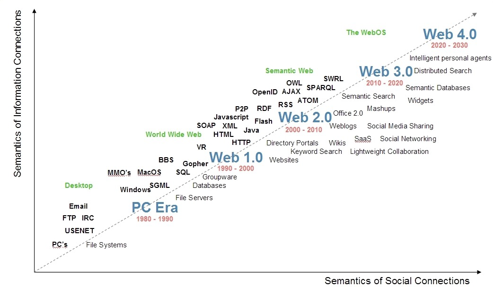
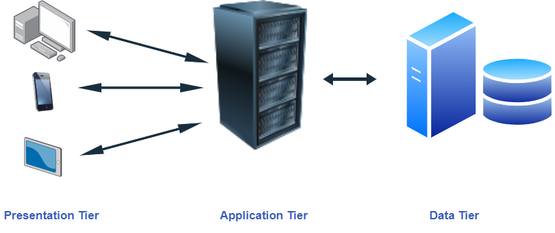

Introduction
THE WORLD WILD WEB OR WEB
Creation:
The World Wide Web was created in 1989 by Sir Tim Berners-Lee, a computer scientist at the European Organization for Nuclear Research (CERN). He envisioned a system for sharing information over the Internet, which he called the World Wide Web. " I just took the principle of hypertext and linked it to the principle of TCP and DNS and then - boom! -that was the World Wide Web!"
Functionality:
The World Wide Web is a system of interlinked hypertext documents that can be accessed through the Internet. It allows users to access and share information, multimedia, and applications through a web browser, such as Google Chrome, Mozilla Firefox, or Safari.
Impact:
The World Wide Web has had a profound impact on society and the world. It has revolutionized the way we communicate, access information, and conduct business, and it has transformed the global economy. The World Wide Web has become an essential part of our daily lives, and its influence and impact will continue to grow in the future.
Web Evolution
 Three Tier Architecture
URL
http://host.company.com:80/a/b/c.html?user=Alice&year=2008#p2
(http:):
identifies protocol used to fetch the content.
Host name (host.company.com):
name of a machine to connect to.
Server's port number (80):
allows multiple servers to run on the same machine.
Hierarchical portion (/a/b/c.html):
used by server to find content.
Query parameters (?user=Omar&year=2003):
provides additional parameters
Fragment (#p2):
Have browser scroll page to fragment (html: p2 is anchor tag)